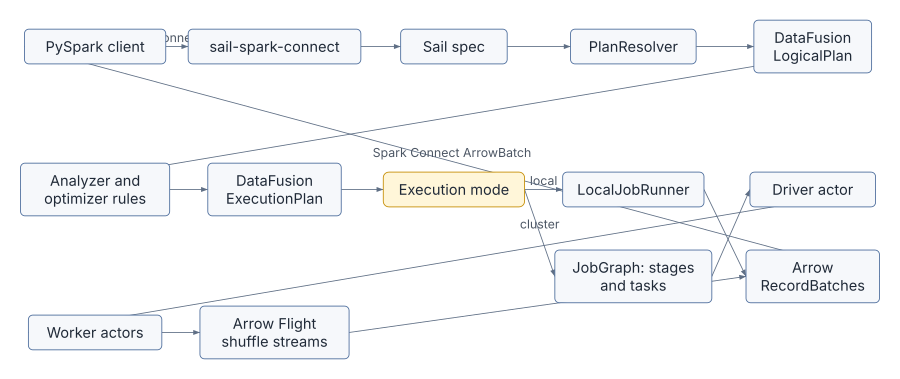
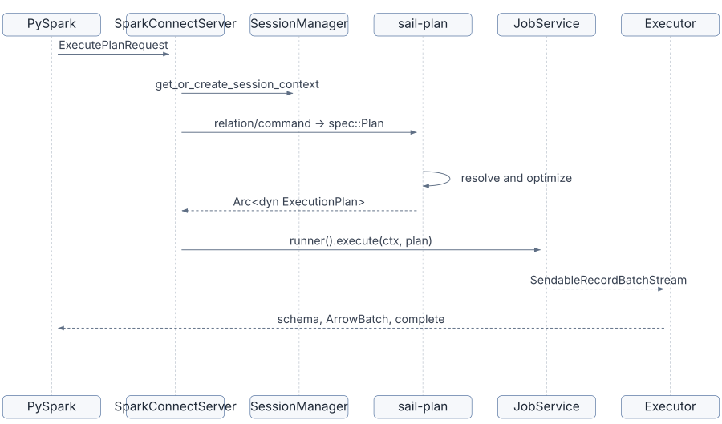
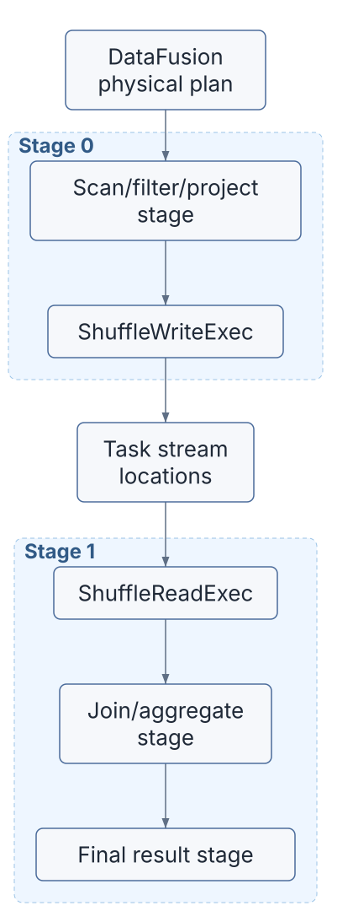
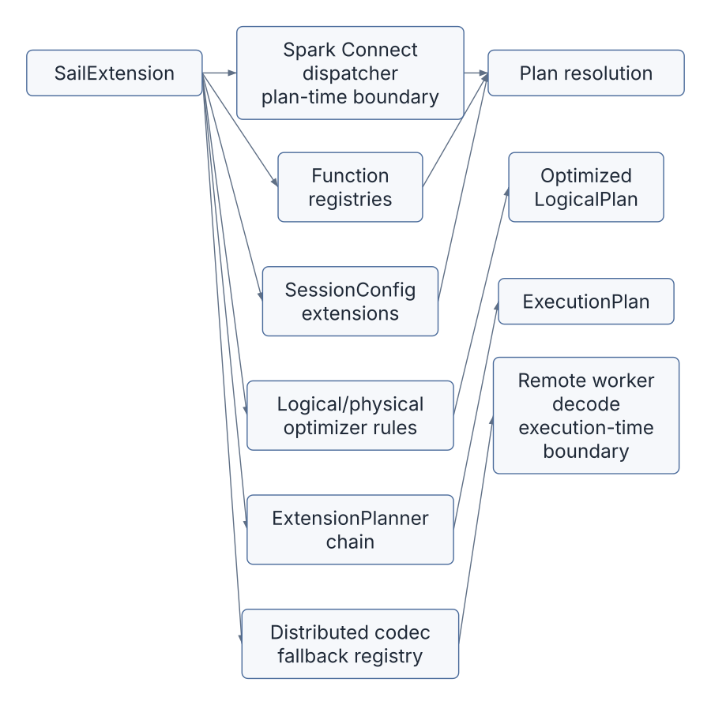

Sail is easiest to understand as two promises held together by one architecture.
The first promise is compatibility: existing PySpark code should be able to connect to Sail through Spark Connect and keep speaking the language of Spark SQL, DataFrames, functions, UDFs, and sessions. The second promise is performance and portability: the actual engine is Rust, Apache Arrow, and Apache DataFusion, with Sail adding Spark semantics, distributed planning, catalogs, Python interoperability, and cluster execution.
That means Sail is not “Spark implemented in Rust” in the narrow sense. It is a Spark-compatible front door over a DataFusion-centered query engine.

The rest of this book walks that diagram from left to right, then returns to the extension proposal in discussion #2001 and asks: where should a third-party DataFusion integration plug in so it works in both local and distributed execution?
Sail has a few major subsystems. Each one has a clean teaching role.
| Subsystem | Main crates | What to learn there |
|---|---|---|
| Spark Connect front door | sail-spark-connect, sail-python,
python/pysail |
gRPC services, PySpark compatibility, Python-to-Rust server startup |
| Plan resolution | sail-plan, sail-sql-parser,
sail-sql-analyzer |
converting SQL and Spark relations into DataFusion logical plans |
| Session construction | sail-session |
DataFusion SessionConfig, SessionState,
custom planners, optimizer rules, and job runners |
| Query execution | sail-execution |
local execution, cluster execution, job graphs, stages, tasks, drivers, workers, shuffles |
| Spark semantics | sail-function, sail-logical-plan,
sail-physical-plan, sail-logical-optimizer,
sail-physical-optimizer |
custom functions, logical nodes, physical nodes, optimizer behavior |
| Data transport | Arrow, Arrow IPC, Arrow Flight | columnar batches across process and network boundaries |
| Catalogs and formats | sail-catalog-*, sail-data-source,
sail-delta-lake, sail-iceberg |
table discovery, scans, writes, system tables, lakehouse integration |
The most important mental model is this:
PySpark API call
-> Spark Connect protobuf relation or command
-> Sail spec
-> DataFusion logical plan
-> optimized DataFusion logical plan
-> DataFusion physical execution plan, with Sail extension nodes
-> local stream or distributed job graph
-> Arrow record batches
-> Spark Connect response streamThis is also the extension story. If an integration only hooks one of
these layers, it will work only until a query crosses into another
layer. A scalar function registered at planning time still has to be
recognized when a physical plan is decoded on a remote worker. A logical
optimizer rule that creates a custom extension node still needs a
physical extension planner. A session option used by that rule has to be
present in the SessionConfig that the planner reads.
That is exactly the problem described in discussion #2001.
The Spark Connect server is implemented by
SparkConnectServer in
crates/sail-spark-connect/src/server.rs. Its
execute_plan method receives an
ExecutePlanRequest, extracts the session ID and user ID,
asks the Sail SessionManager for a
SessionContext, and dispatches either a relation or a
command.
The distinction matters:
The central handoff is in
crates/sail-spark-connect/src/service/plan_executor.rs.
handle_execute_relation converts the Spark Connect relation
into Sail’s internal spec::Plan, then calls
handle_execute_plan. That function asks
sail-plan to resolve and plan the work, then asks the
session’s JobService to execute the resulting physical
plan.
The output is a Spark Connect response stream. Sail reads
RecordBatch values from DataFusion and serializes them into
Spark Connect ArrowBatch messages using Arrow IPC in
crates/sail-spark-connect/src/executor.rs.

This is why Spark Connect deserves its own chapter. It is not just an API shim; it controls the session lifecycle, the response stream shape, the data type boundary, and the compatibility surface seen by PySpark.
The Python package pysail is thin by design. The public
Python class
python/pysail/spark/__init__.py::SparkConnectServer
delegates to a native PyO3 object.
The Rust side lives in
crates/sail-python/src/spark/server.rs. It loads
AppConfig, grabs the global Tokio runtime, binds a TCP
listener, and starts the Spark Connect server in a background thread.
The implementation explicitly releases the Python GIL while waiting for
the server so Python UDFs are not blocked by the server thread.
This shape is important for the extension proposal. If third-party
extensions are discovered from Python wheels, pysail
startup is the natural discovery point. But the extension object has to
cross from Python packaging into Rust planning and execution. Discussion
#2001 proposes Python entry points such as:
[project.entry-points."pysail.extensions"]
sedona = "pysail_sedona:register"That works as user experience only if the registered extension can contribute to the same Rust-side machinery used by the CLI and by custom embedders.
Sail’s query planning entry point is
resolve_and_execute_plan in
crates/sail-plan/src/lib.rs.
It performs the key transitions:
PlanResolver.LogicalPlan.SessionState to optimize the logical
plan.ExecutionPlan.The important architectural choice is that Sail does not use DataFusion as a black box. It uses DataFusion’s abstractions as the spine, then installs its own semantics around them.
In crates/sail-session/src/session_factory/server.rs,
Sail creates a SessionConfig with custom extensions:
Then it creates a SessionStateBuilder with Sail’s
analyzer rules, optimizer rules, physical optimizer rules, and custom
query planner.
That custom query planner is in
crates/sail-session/src/planner.rs.
ExtensionQueryPlanner builds a DataFusion
DefaultPhysicalPlanner with Sail’s extension planners:
lakehouse extension planners
-> system table physical planner
-> Sail ExtensionPhysicalPlannerExtensionPhysicalPlanner recognizes Sail logical
extension nodes such as range, show string, map partitions, monotonic
IDs, Spark partition IDs, file writes, file deletes, streaming nodes,
catalog commands, explicit repartition, and barriers. It turns them into
physical ExecutionPlan implementations from
sail-physical-plan and related crates.
This is where discussion #2001 finds one of its sharp edges. Today,
if ExtensionPhysicalPlanner does not recognize a logical
extension node, it returns an internal error. DataFusion’s extension
planner convention is to return Ok(None) when a planner
does not own a node, allowing later planners in the chain to try. For
third-party planners, that difference controls whether composition
works.
When Sail is running locally, the ServerSessionFactory
installs a LocalJobRunner. Its execute
implementation in crates/sail-execution/src/job_runner.rs
wraps the plan in tracing and then calls DataFusion’s
execute_stream.
That is the simplest possible execution path:
Arc<dyn ExecutionPlan>
-> execute_stream(plan, task_ctx)
-> SendableRecordBatchStream
-> Spark Connect response streamLocal mode is ideal for learning DataFusion because all of
DataFusion’s partitioned execution model is still present, but no
distributed staging is needed. The physical plan executes in one
process, and DataFusion’s operators recursively call their children
through the ExecutionPlan trait.
Cluster mode swaps in ClusterJobRunner. Instead of
executing the physical plan directly, it sends a
DriverEvent::ExecuteJob to a driver actor. The driver
builds a distributed job graph and schedules tasks on workers.
The core data structure is JobGraph in
crates/sail-execution/src/job_graph/mod.rs. The code
comments are wonderfully plain: a job has stages, each stage has
partitions, and tasks execute individual stage partitions. Each task can
produce output split into channels.
The graph is built in
crates/sail-execution/src/job_graph/planner.rs.
JobGraph::try_new starts from a DataFusion physical plan
and recursively splits it at distributed boundaries:
RepartitionExec becomes a shuffle boundary.ExplicitRepartitionExec becomes a shuffle
boundary.CoalescePartitionsExec becomes a shuffle boundary.SortPreservingMergeExec creates a merge input.CoalesceExec creates a rescale input.The planner also contains two distributed-correctness rewrites:
This is one of Sail’s best teaching examples. DataFusion physical plans already know about partitioning, but a distributed engine must interpret that partitioning as data movement, task placement, materialization, and reuse.

Sail represents shuffle write and shuffle read as physical execution plan nodes.
ShuffleWriteExec in
crates/sail-execution/src/plan/shuffle_write.rs executes
its child for one input partition, partitions each
RecordBatch into output channels using hash or round-robin
partitioning, and writes those partitioned batches to task stream
locations.
ShuffleReadExec in
crates/sail-execution/src/plan/shuffle_read.rs has no
children. For a given output partition, it opens the task stream
locations it needs and merges the resulting record batch streams.
That design keeps the distributed runtime columnar all the way through:
RecordBatch stream
-> partition RecordBatch into channel batches
-> write channel batches
-> read channel batches from remote/local stream locations
-> merge streams
-> continue as RecordBatch streamThe public architecture docs describe Arrow Flight as Sail’s data
plane for shuffle exchange and result return. The code-level point is
that the logical idea of “shuffle” becomes ordinary DataFusion
ExecutionPlan nodes that read and write Arrow batch
streams.
Sail has a Spark-compatible function layer in
crates/sail-plan/src/function. Built-in scalar, generator,
table, aggregate, and window functions are stored in static registries.
The resolver uses those registries to turn unresolved Spark functions
into DataFusion expressions and UDF objects.
But distributed execution adds another requirement: workers must be
able to decode the physical plan they receive. That is why
crates/sail-execution/src/codec.rs has explicit UDF and
UDAF encode/decode logic. It can rebuild PySpark UDFs from serialized
payloads, and it can re-resolve many built-in UDF names when decoding
standard functions.
This is the most important extension lesson in the chapter:
Planning-time registry is necessary.
Distributed execution-time registry is also necessary.If an extension contributes ST_Intersects, it is not
enough for the planner to know the function. A remote worker decoding a
physical plan also has to know how to reconstruct the same
ScalarUDF or AggregateUDF. Discussion #2001
calls this out directly for Sedona-style extensions.
Discussion #2001 proposes a unified SailExtension trait.
Its motivation is that real DataFusion integrations usually need several
hooks at once:
The proposal’s motivating example is Apache SedonaDB. A spatial query
might need ST_* scalar UDFs during plan resolution, session
options during optimization, a logical optimizer rule to replace a cross
join plus spatial predicate with a spatial join logical extension node,
a physical planner to create SpatialJoinExec, and
worker-side UDF re-resolution in a cluster.
This means the final chapter of the book should not treat extensions as a plugin convenience feature. Extensions are a stress test of the architecture. They ask whether Sail’s layers are composable in the same direction data actually flows.
Chapter 13 develops the proposal in two parts. Extensions cross two boundaries with different stability requirements:
Relation.extension, Command.extension, and
Expression.extension messages are the natural channel.The same SailExtension object registers contributions to
both. Some extensions only need one.

For this chapter, read these files in order:
docs/concepts/architecture/index.mddocs/concepts/query-planning/index.mdcrates/sail-spark-connect/src/server.rscrates/sail-spark-connect/src/service/plan_executor.rscrates/sail-plan/src/lib.rscrates/sail-session/src/session_factory/server.rscrates/sail-session/src/planner.rscrates/sail-execution/src/job_runner.rscrates/sail-execution/src/job_graph/mod.rscrates/sail-execution/src/job_graph/planner.rscrates/sail-execution/src/plan/shuffle_write.rscrates/sail-execution/src/plan/shuffle_read.rscrates/sail-execution/src/codec.rsDo not try to understand every operator yet. Follow the type transitions:
ExecutePlanRequest
-> SessionContext
-> spec::Plan
-> LogicalPlan
-> ExecutionPlan
-> SendableRecordBatchStreamThen follow the cluster-only transition:
ExecutionPlan
-> JobGraph
-> Stage
-> StageInput
-> Task
-> ShuffleWriteExec / ShuffleReadExecOnce those two paths feel familiar, the rest of the book can zoom into each layer without losing the whole shape.
Sail’s architecture is a layered translation pipeline. PySpark speaks Spark Connect. Spark Connect becomes Sail’s internal spec. The spec resolves into DataFusion logical plans. DataFusion optimizes and physical-plans the query, with Sail adding Spark semantics through custom functions, logical nodes, physical nodes, optimizer rules, and session extensions. Local mode executes the physical plan directly. Cluster mode decomposes it into stages and tasks, moving Arrow record batches through shuffle streams.
The extension proposal in discussion #2001 matters because it turns this architecture inside out. A third-party integration must be able to contribute to every layer where its semantics appear. If Sail exposes only one hook, extensions will work in toy examples and fail when optimization, physical planning, or distributed execution enters the picture.
The next chapter should slow down and teach the Rust patterns that
make this architecture possible: trait objects, Arc, async
services, actor handles, DataFusion extension traits, and typed session
extensions.